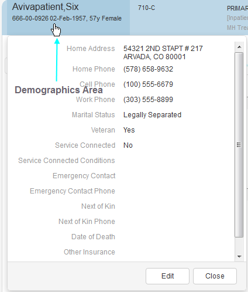

The Patient Bar plug-in is a work in progress. Specific features may undergo minor or significant changes as the plug-in iterates toward national release. The following descriptions and instructions apply solely to the software's state as it existed at the time of this writing.
The plugin offers an on-click pop-up pane containing the following additional information, provided the information is available in your site's local VistA account:
- Home address (two to three lines: street address; specific location at this address—Apt. 3B, for example—if applicable; city, state, ZIP code)
- Home phone ((nnn) nnn-nnnn format) Update
- Cell phone ((nnn) nnn-nnnn format) Update
- Work phone ((nnn) nnn-nnnn format) Update
- Marital status (married, divorced, single, or widowed)
- Veteran (yes, no)
- Service-connected status (yes or no, with the service-connected percentage in parentheses)
- Service-connected conditions (a list of service-connected conditions by name with a service-connected percentage in parentheses following each condition)
- Emergency contact phone numbers ((nnn) nnn-nnnn format) Update
- Next-of-kin name (surname, first name format)
- Next-of-kin phone number ((nnn) nnn-nnnn format)Update
- Date of death (if applicable) plus associated data from Computerized Patient Record System (CPRS) (dd-mmm-yyyy format—01 Jul 2005, for example)
- Other insurance information
- Copay information
